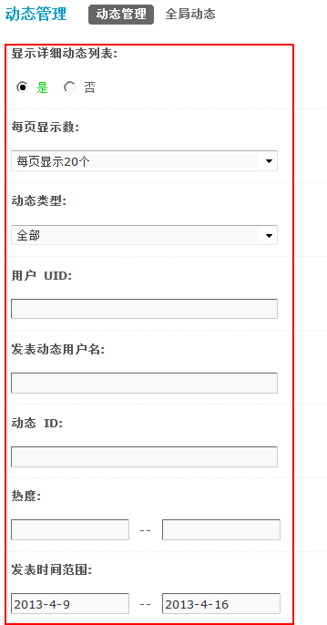
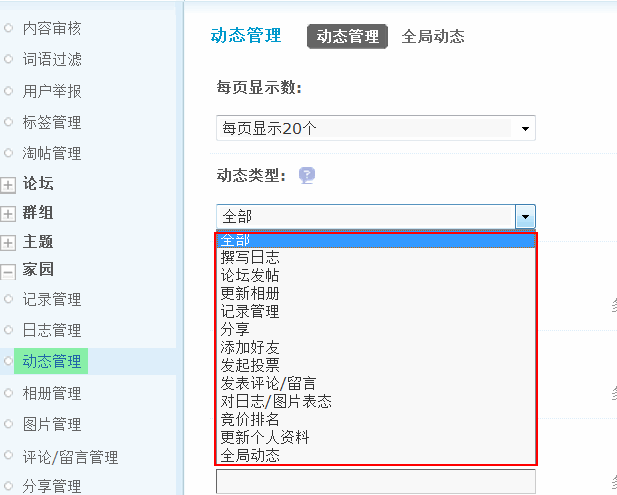
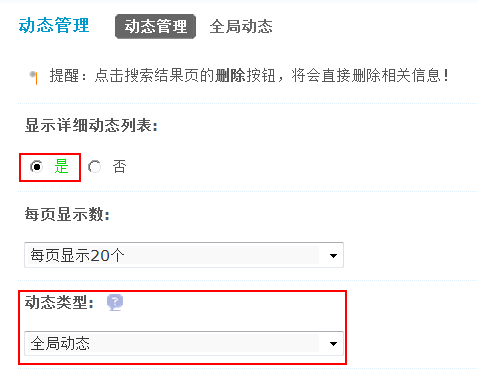

动态管理
通过动态管理功能，站长可以方便的搜索和管理到站点动态，并且可以发表全局动态。
一、按指定条件进行搜索
操作路径：【后台】=>【内容】=>【动态管理】
管理员可以设置搜索条件，划定搜索范围，如下图所示：
1、显示详细动态列表： 选择“是”，则在搜索结果中列出符合条件的动态详细信息；选择“否”，则只会在结果中显示出符合条件的动态数量。
选择“是”的效果如下：
2、每页显示数：每页显示多少条动态。
3、动态类型：选择动态的类型，如下图
4、用户 UID：按用户的 uid 号进行搜索，多UID中间请用半角逗号”,” 分割。
5、发表动态用户名：按发表动态的用户名进行搜索，多用户名中间请用半角逗号 ”,” 分割。
6、动态ID：按动态的 id 号进行搜索，多个动态ID中间请用半角逗号”,” 分割。
7、热度：按照动态的热度值进行搜索。
8、发表时间范围：格式 yyyy-mm-dd，不限制请输入0。
点击‘提交’后即可进行搜索。
您可以对搜索结果进行直接删除操作。
二、全局动态
是在站内任何一个成员的好友动态里面都会出现的动态，每个成员都能第一时间看到。站长可以灵活使用全局动态来发布一些公开的信息。 如公告类的说明。
在【动态管理】=>【全局动态】中，填写好要发表的全局动态的标题、内容、备注、图片地址和链接、发布时间等信息后，就可以发表了。
1、发布全局动态
动态标题：填写全局动态的标题名称。
内容：填写全局动态的内容。
动态备注：对该动态的注释说明，支持 html。
第1张图片地址：填写第1张图片的地址。
第1张图片链接：填写第1张图片的链接。以此类推，可以发布4张图片。
发布时间：全局动态的发布时间，默认情况下发布全局动态时系统会自动读取系统的当前时间。需要注意的是全局动态的发布时间，可以通过填写一个将来的日期和时间，使这条动态会在这个将来的日期到来之前，一直显示在第一位。比如当前的时间是 2012-02-16 10:52，我们可以在这里填写一个将来的时间如：2012-12-16 10:52
发表后的效果如下图所示：
2、编辑全局动态
在动态管理中，搜索动态类型中选择“全局动态”即可搜索到所有的全局动态。
点击“提交”后即可查看到符合条件的全局动态。
注意：如果全局动态的发布时间是一个将来的时间，那么在搜索全局动态的时候发布时间范围的开始时间一定要选择将来的时间，否则搜索不到该动态。
点击最右侧的“编辑”链接即可对搜索到的全局动态进行修改。